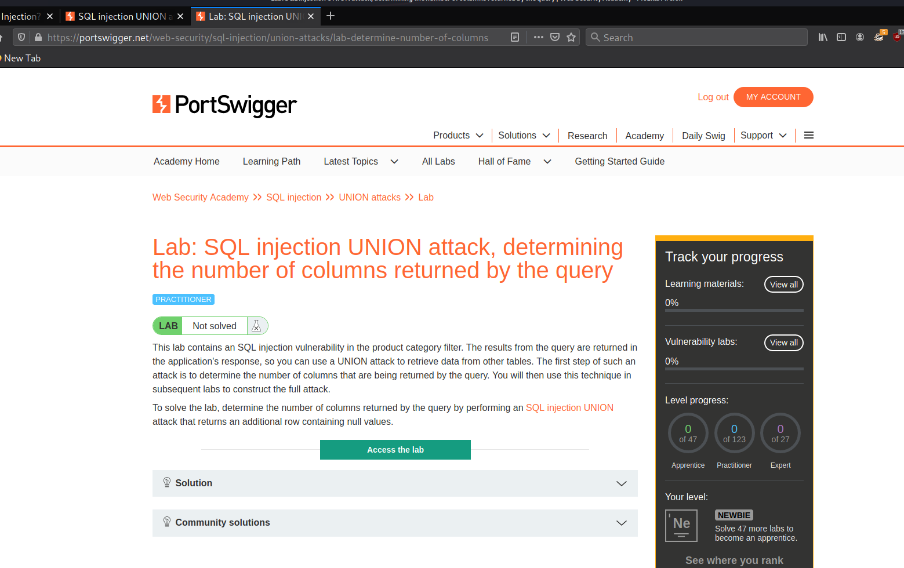
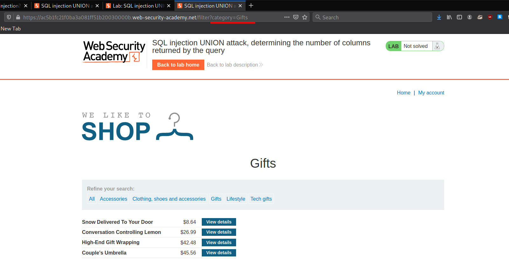
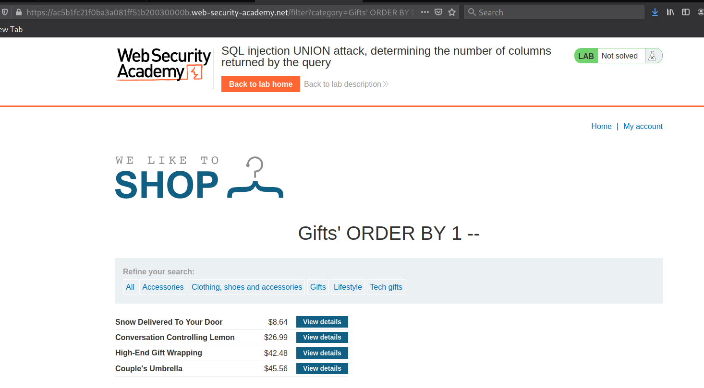
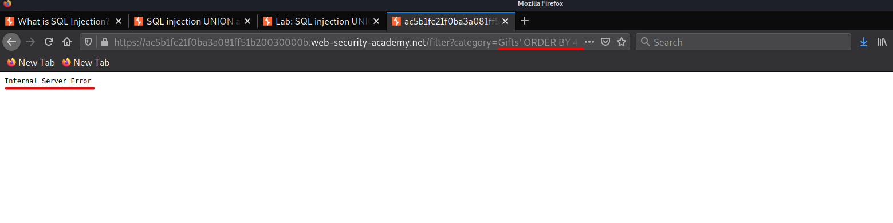

#3 Lab3
Lab: SQL injection UNION attack, determining the number of columns returned by the query
In this lab we will see how we can determine the number of columns returned by the Query
now we will access the lab
we have the category param which is vuln..
and now we will use the order by method to First determine the number of columns
Initial Payload:
and everything seems to work correct, but now we increase the order number one by one to a extent when we get error
we reach
but as soon as we increase the number to 4 we get an error , which means that we have 3 columns...
so now we can safely conclude that we have 3 columns in there, now we need to start dumping data but before we need to see what gets printed to screen from our 3 columns that we will probe using the UNION method
Payload1:→ Gifts' UNION SELECT '111', NULL, NULL --
we don't see 111 printed to screen which means that the First columns does not get printed to screen so we would now Try with the second column
Payload2:→ Gifts' UNION SELECT NULL, '111', NULL --
and we can see that the 111 gets printed to the screen , now that we know whats getting printed to the screen we will move ahead into dumping some data
Important Note:• The reason for using NULL as the values returned from the injected SELECT query is that the data types in each column must be compatible between the original and the injected queries. Since NULL is convertible to every commonly used data type, using NULL maximizes the chance that the payload will succeed when the column count is correct.
• On Oracle, every SELECT query must use the FROM keyword and specify a valid table. There is a built-in table on Oracle called dual which can be used for this purpose. So the injected queries on Oracle would need to look like: ' UNION SELECT NULL FROM DUAL--.
• The payloads described use the double-dash comment sequence -- to comment out the remainder of the original query following the injection point. On MySQL, the double-dash sequence must be followed by a space. Alternatively, the hash character # can be used to identify a comment.